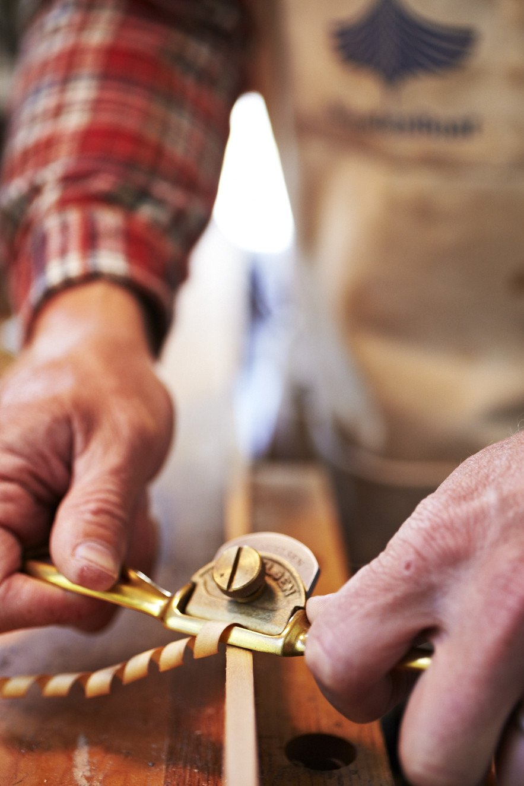
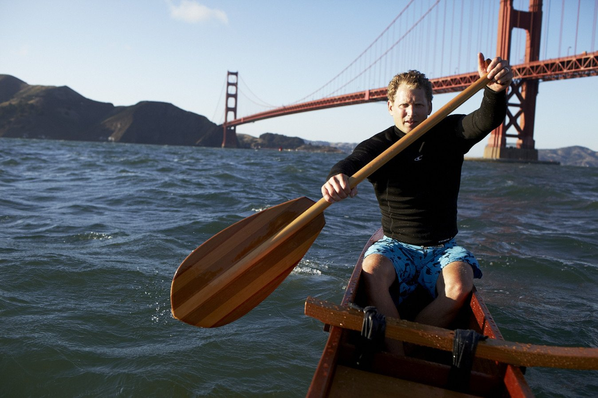

Wooden ocean craft made by hand acquire a soul—a reflection of the maker, the generosity of the trees, and our rich experiences with those ocean craft over time.
It's always been this way. For thousands of years, people have taken to the sea with tools and vessels handmade by craftspeople we know, from carefully chosen wood, and by methods we understand.



Those tools and vessels, soulfully made and well used, offer an intimacy that plastic and carbon fiber and modern manufacturing, for all their virtues, can never touch.
This is what my work is all about: building things with enough spiritual heft that we will love them for years and years.